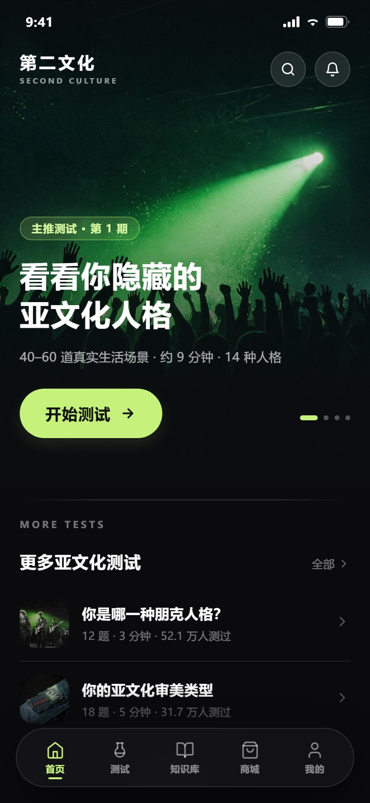
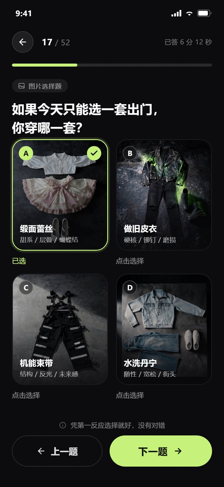
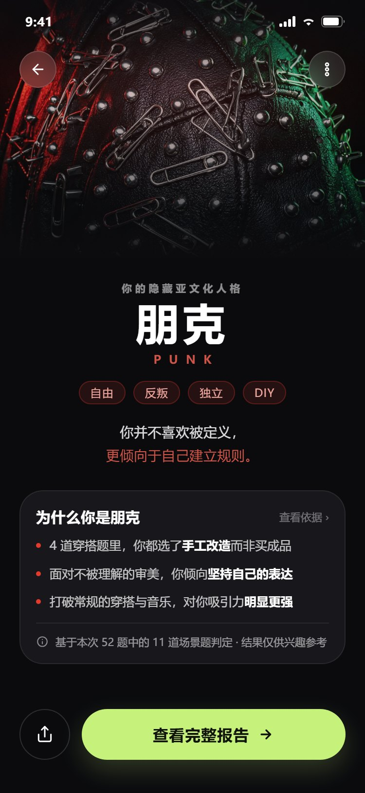
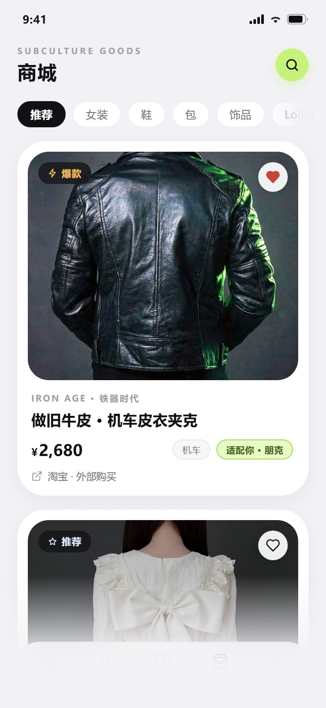
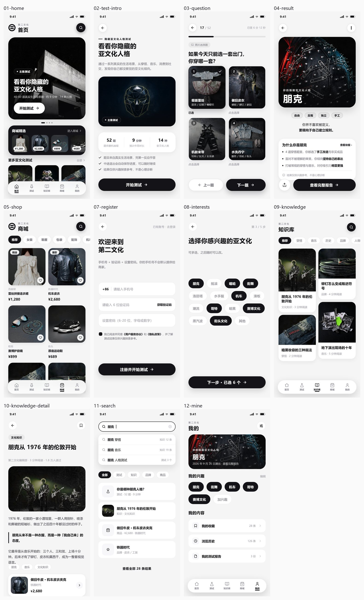

31 页微信小程序：人格测试 → 14 型文化档案 → 知识库 → 收藏与报告。所有年份、数字、出处都可追溯；没有来源的数字不上屏。
近黑纸面、单一信号色；长文用宋体，信息用无衬线。已通过 320px 小屏与 1.0 / 1.3 / 1.6 倍字号回归。





这个项目最先被修的不是界面，是数据。
说明：微信小程序不能托管在 GitHub Pages。这里部署的是项目主页与法律页面；小程序本体需在微信开发者工具中导入 miniprogram/ 后上传。